Overview
These are my distilled notes from working through KSP’s in-game tutorials — flight basics, Orbiting 101, rocket construction, and the full Mun landing + return. The screenshots are from the tutorials themselves (narrated by Gene and Wernher von Kerman, naturally). The goal of this guide: everything you need to not die, in one place.
Flight Basics
Pitch, Yaw and Roll
The three rotation axes of your craft. On the keyboard: W/S pitch, A/D yaw, Q/E roll.
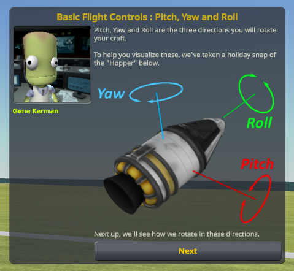
S.A.S. — your best friend
The Stability Augmentation System counteracts unwanted rotation and holds your current orientation. Hold [F] to engage it momentarily, press [T] to toggle it. If you’re ever tumbling out of control: hit [T] and let it cancel the rotation.
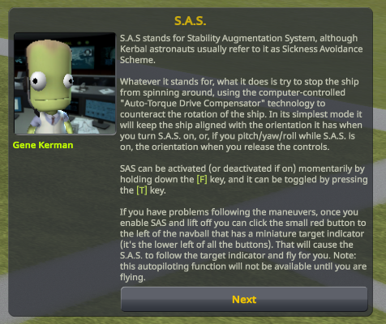
There’s also a target-following mode: once flying, click the small red button to the lower-left of the navball (the one with the miniature target indicator) and SAS will fly toward the target marker for you.
A first suborbital hop
The tutorial ascent profile for a simple arcing flight east over the water:
- Launch pointing straight up (90° elevation on the navball).
- Tilt east to 80° elevation by 150 m/s (start tilting at 50 m/s).
- Tilt east to 70° by 400 m/s (start at 250 m/s).
- After burnout, coast up into space, prepare for reentry, land.
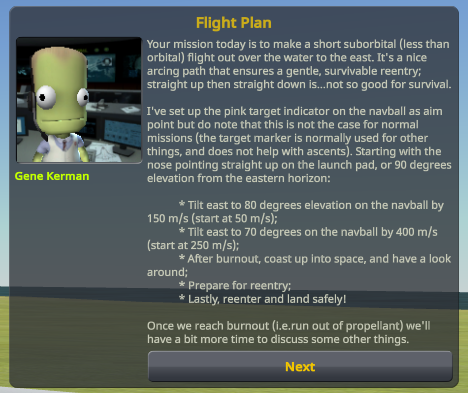
Reentry orientation
Reenter bottom-first (heat shield / engine end down). If you ascended at ~70° pitch, you’ll naturally reenter at about −70°: aim the top of the capsule at the 70° pitch line on the opposite heading (ascended east at 90° → reenter pointing at heading 270, 70° pitch). Turn SAS off, change attitude, turn it back on.
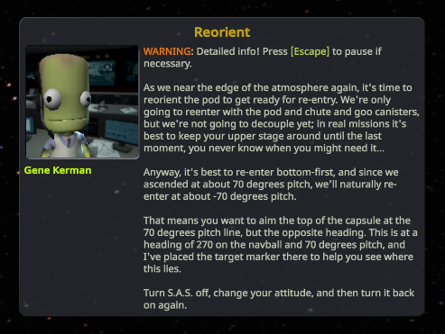
Getting Science
Science comes from crew reports, surface samples, contracts, and experiment parts (like the Mystery Goo Containment Unit), all driven through right-click context menus on parts and Kerbals. The catch: raw data only becomes usable science if you transmit it or physically return it to Kerbin.
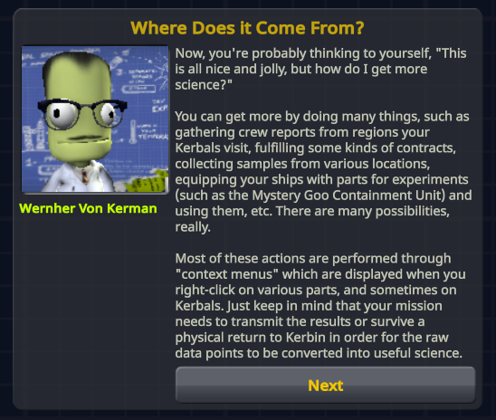
Orbiting 101
What an orbit is
Orbiting is just free-falling fast enough forward that you keep missing the ground. No atmosphere up there means nothing slows you down — no engine needed to stay up.
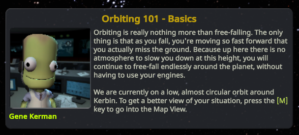
The Map View
Press [M] to toggle it. Hold right-click and drag to look around; hover over icons (Ap, Pe, etc.) for info, right-click a node to pin it.
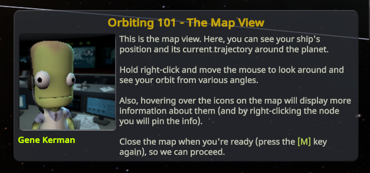
Attitude control in vacuum
No drag means every rotational input you apply keeps going until you apply the opposite one. When in doubt, [T] for SAS.
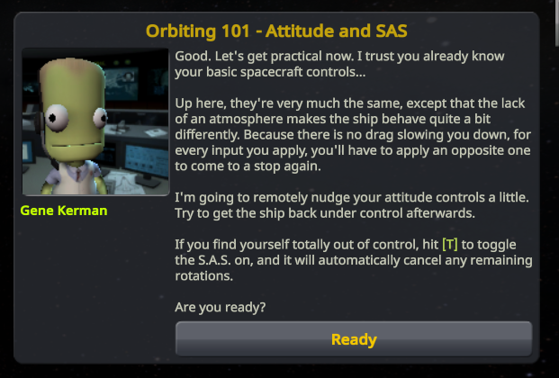
The golden rule of maneuvers
Everything you do affects the opposite side of your orbit.
- Raise your apoapsis → burn prograde at periapsis.
- Raise your periapsis → burn prograde at apoapsis.
- Lower either → burn retrograde at the opposite point.
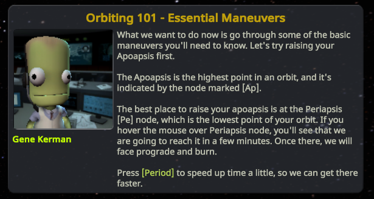
Face prograde, check SAS is holding, [Z] for full throttle, and watch the far side of the orbit rise:
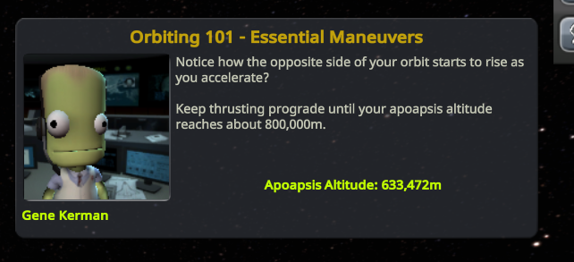
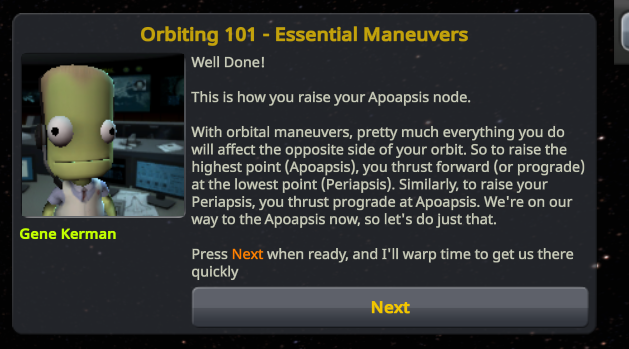
Also worth internalizing: the higher the orbit, the slower you move. Climbing away from the planet trades speed for altitude, like a thrown ball (the Mun plods along at ~540 m/s while low orbit is ~2,300 m/s).
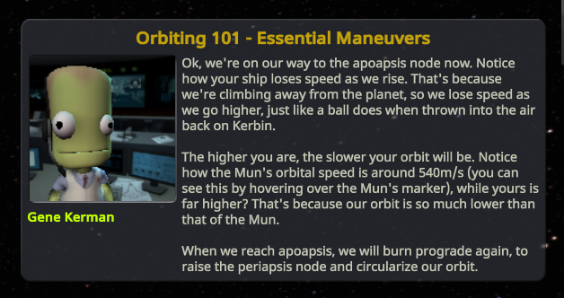
Inclination
Inclination changes are done by burning toward normal/antinormal — 90° to your prograde vector, without changing pitch relative to the surface.
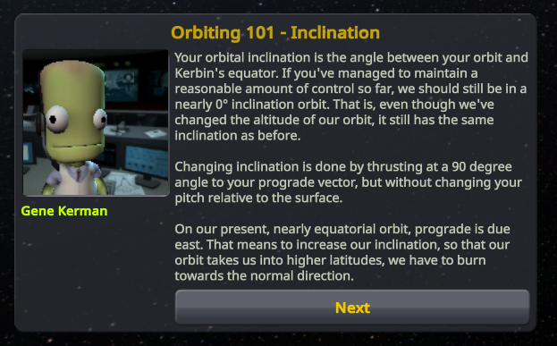
Key efficiency tip: do inclination changes at the slowest part of your orbit (highest point). The slower you’re moving, the less delta-V it takes to swing your velocity vector around — which also means plane changes are cheaper on larger orbits.
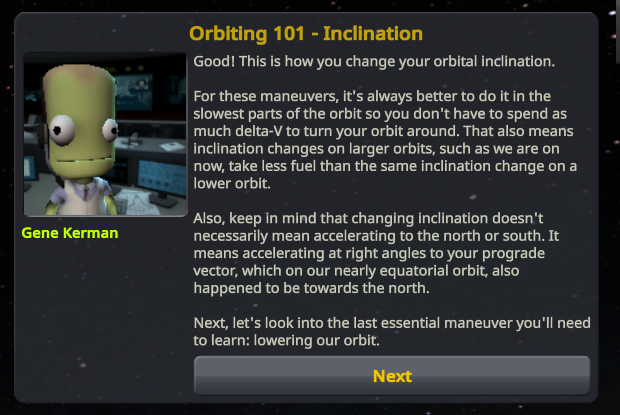
Rocket Construction Basics
VAB camera
Orbit: arrow keys or right-mouse drag. Up/down: PageUp/PageDown or scroll wheel. Zoom: +/− or Shift+scroll.
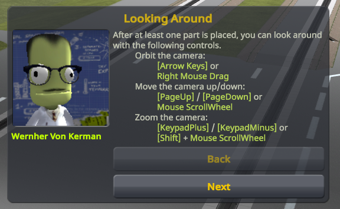
Match the engine to the payload
First lesson in rocket design: a solid booster that’s too powerful for a light payload will either burn up on ascent, burn up coming back down, or come in too fast for the chute. Thrust must fit the craft.
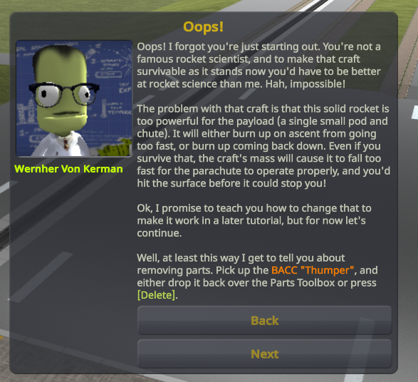
The Staging Stack
The stack in the bottom right shows which parts activate at each stage. The auto-generated staging is often wrong — e.g. parachute and engine in the same stage. Mouse over a stage to get + / − buttons and split parts into the right order.
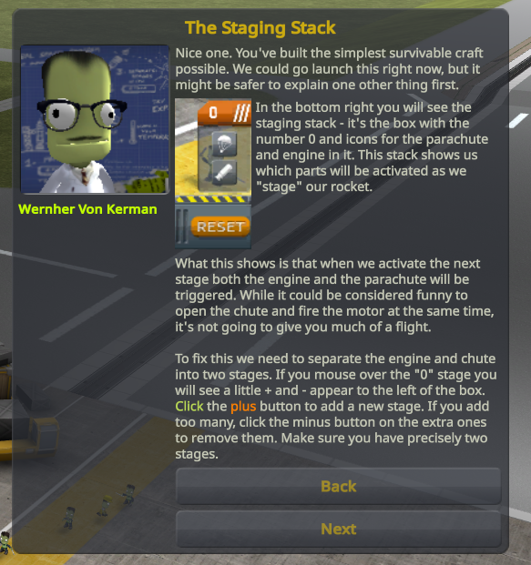
Building an Orbital Rocket
The goal: a two-stage rocket with boosters, capable of ascent to orbit, orbital operations, and safe return.
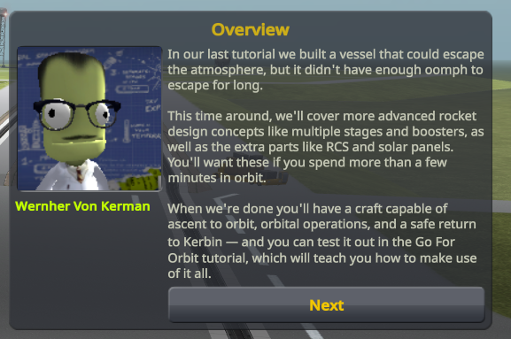
The upper stage
Shopping list: a stack decoupler, an RCS fuel tank, liquid fuel tanks, 4 RCS thruster blocks, 4 solar panels, 4 batteries, and an efficient vacuum engine.
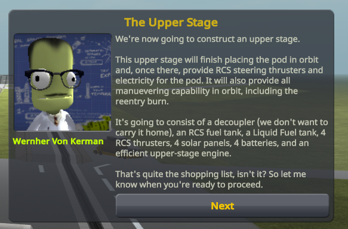
Stack decoupler under the pod — watch the little red arrows, they must point up (toward the part that stays). If they point down, detach and rotate with W/A/S/D.
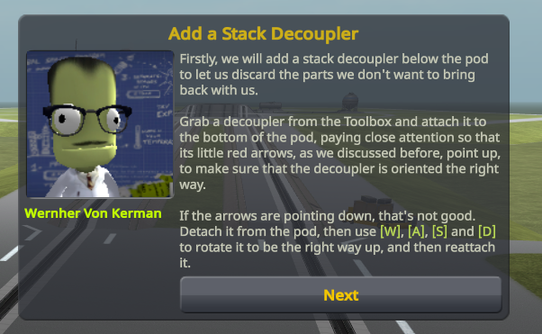
RCS tank (FL-R120) under the decoupler. RCS uses a single propellant (hence monopropellant) and is for fine maneuvers — translation in any direction, not just forward. Right-click the tank and lower it to what you need (the tutorial trims it to 96 units) to save weight.
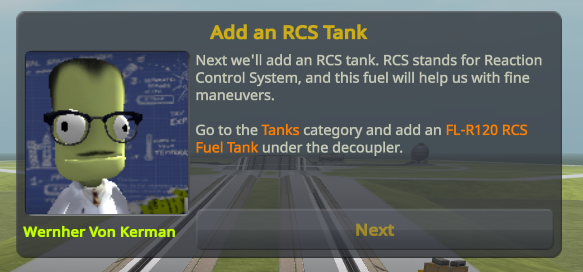
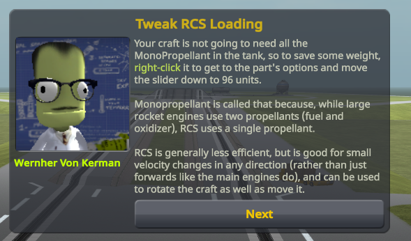
Propellant tanks: a tiny FL-T100, then a medium FL-T400 below it.
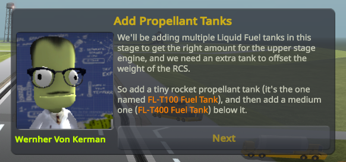
Engine: the LV-909 “Terrier” — nearly useless at sea level but highly efficient in vacuum (and above ~20km). Perfect for an upper stage that only ignites high up.
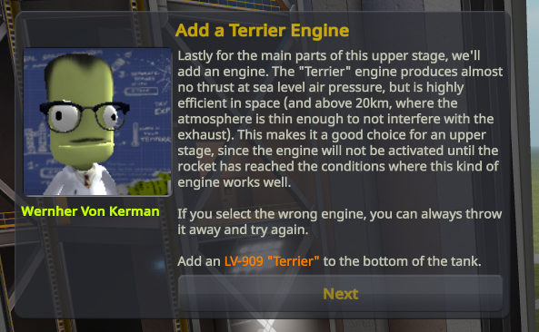
Center of Mass, and where RCS goes
Toggle the CoM indicator in the engineering tools. Thrust through the CoM translates the ship; thrust around it rotates the ship.
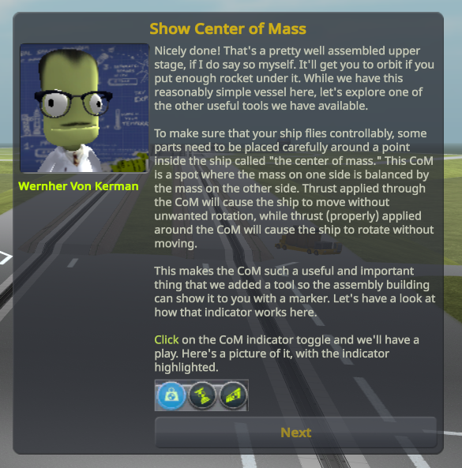
Crucially, the CoM moves during flight as fuel drains. Right-click the tanks and empty them in the editor to see where the “dry” CoM sits versus the “wet” one:
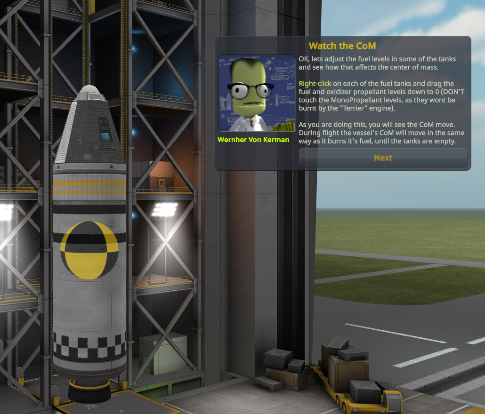
RCS thrusters must be balanced around the CoM or every translation will also rotate you. Since the CoM moves, place them at a compromise point between the wet and dry CoM — for this build, around the tiny fuel tank.
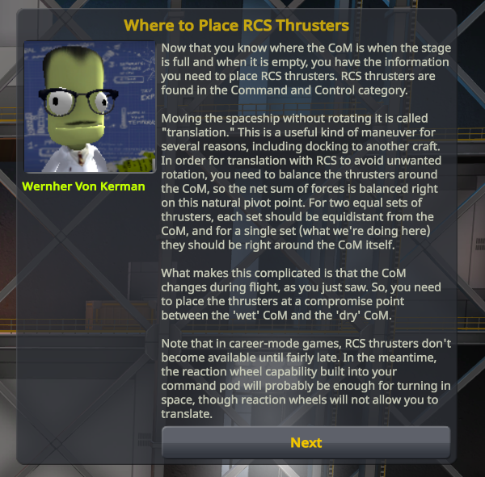
Turn on Angle Snap ([C]), 4x symmetry, and place 4 RV-105 thruster blocks. Fine-tune with the Offset gizmo (snap off for that).
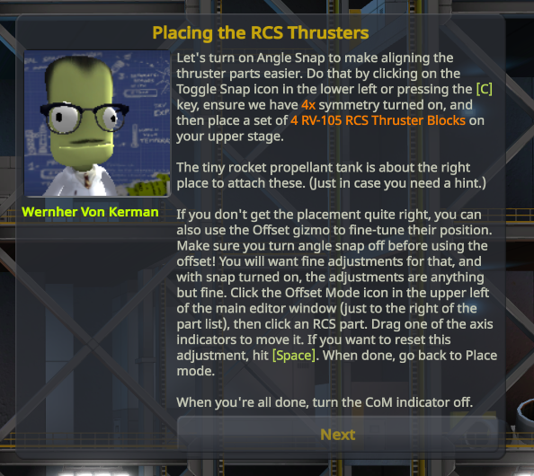
Electric charge
Don’t keep your engine running in orbit for power — add batteries and generation instead.
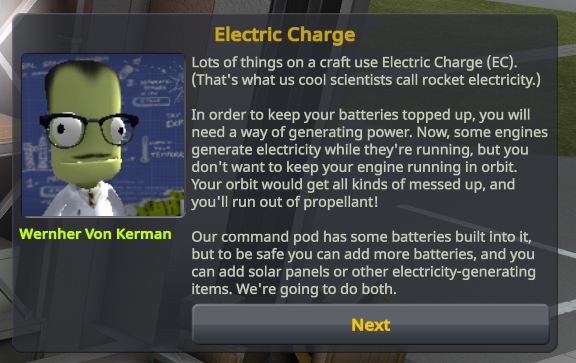
OX-STAT solar panels: hold over the lower end of the tanks, [A] to rotate 90°, place in 4x symmetry; then 4 Z-100 batteries between them.
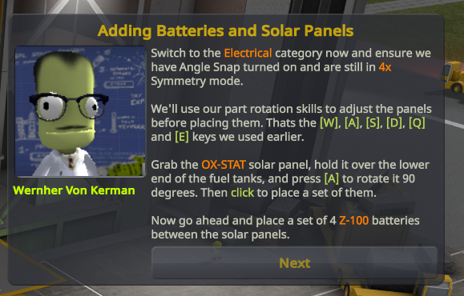
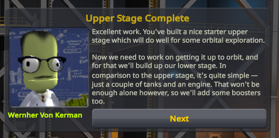
The lower stage
Two FL-T400 tanks at the bottom of the stack:
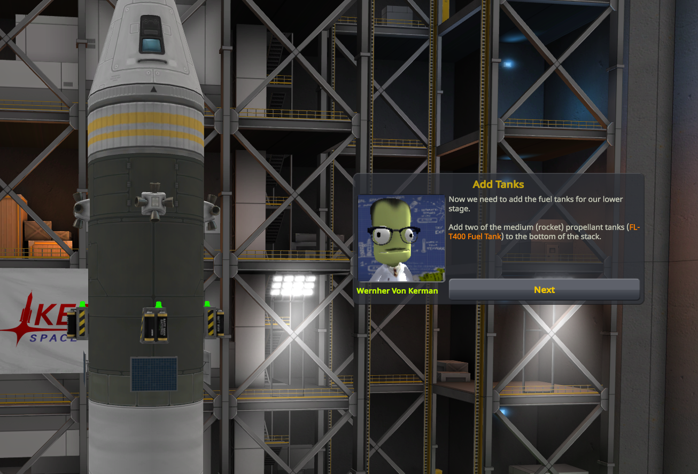
Sustainer engine: the LV-T45 “Swivel” — it burns from liftoff until well after the boosters separate, sitting between boosters and vacuum engines in Isp terms. (Isp — specific impulse — varies with air pressure: boosters are strong at sea level, the Terrier only in vacuum, the sustainer bridges the gap.)
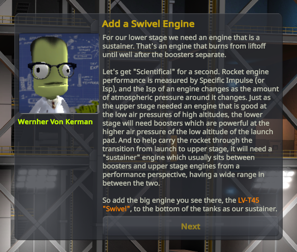
At full thrust it’s too powerful for this rocket, so right-click it and set the thrust limiter to 65 — 65% thrust, but burning 65% of the fuel rate, so it burns longer.
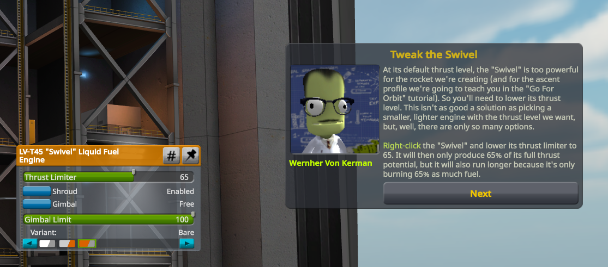
Boosters: TT-38K radial decouplers in 2x symmetry near the bottom of the lowest tank, then RT-10 “Hammer” SRBs on them. SRBs can’t be throttled once lit — set their constant thrust before launch: right-click, thrust limiter to 50. Tweaks apply to all symmetry counterparts automatically.
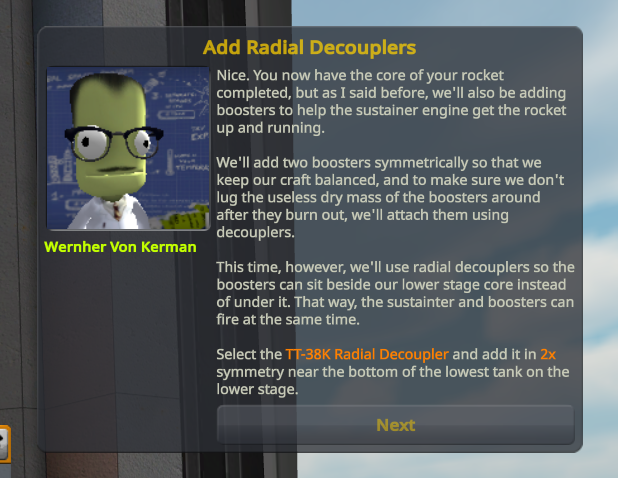
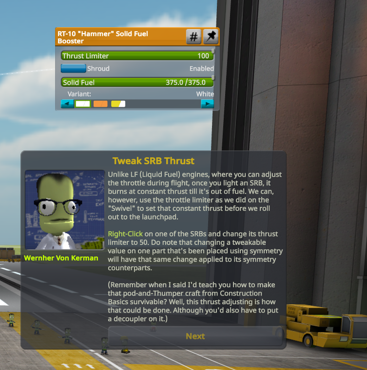
Aerodynamics: nose cones on the flat SRB tops (2x), and AV-R8 winglets in 4x symmetry near the bottom of the lowest tank — they’re control surfaces, adding stability and control authority low in the atmosphere. Make sure they don’t intersect the decouplers or SRBs.
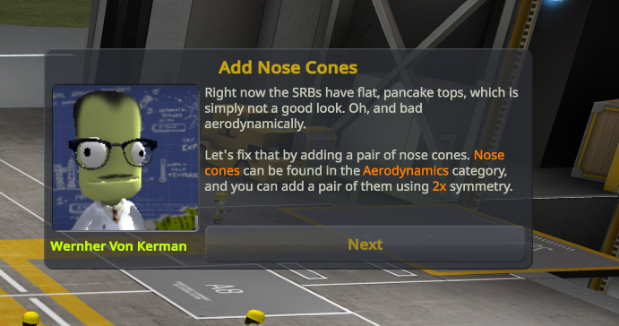
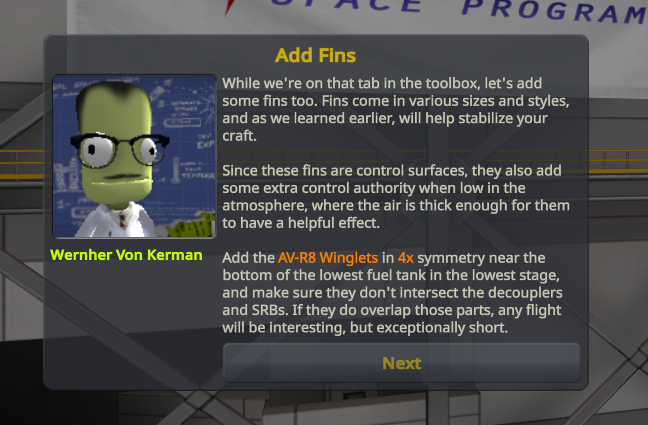
Fix the staging
Review the stack before rolling out: the auto-staging had the SRBs firing before the sustainer. Drag the Swivel’s icon down into the same stage as the SRBs so they all light together at liftoff.
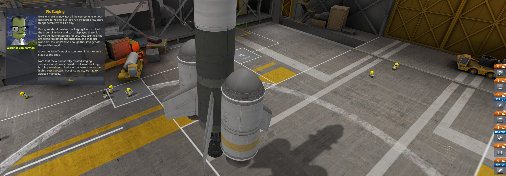
The abort action group
Set up an Abort action group (career mode needs an upgraded VAB for this): decoupler below the pod → Decouple; each liquid engine → Shutdown; one radial decoupler → Decouple (symmetry covers its twin). Trigger abort in flight and the capsule separates clean, engines dead. Remember to deploy the chute yourself afterwards.
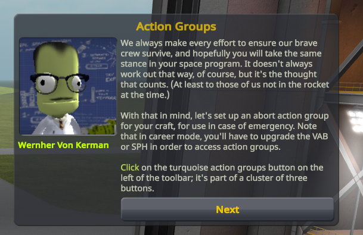
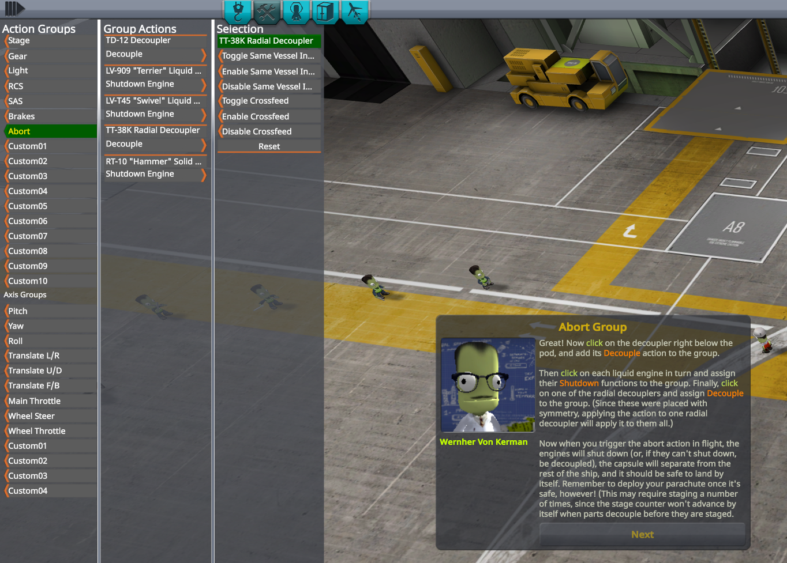
To the Mun
Starting point: Low Kerbin Orbit (LKO), with the flight tutorials and Orbiting 101 under your belt.
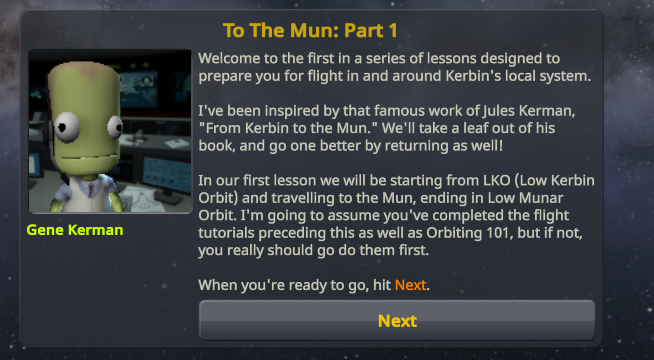
The transfer orbit
A transfer orbit is just an orbit used to move between two orbits: periapsis near Kerbin, apoapsis stretched out to just beyond the Mun’s orbit. Interplanetary trajectories are the same idea, bigger scale.
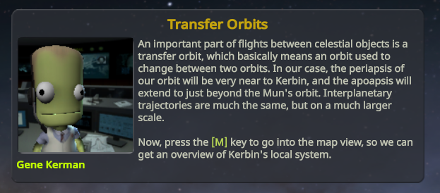
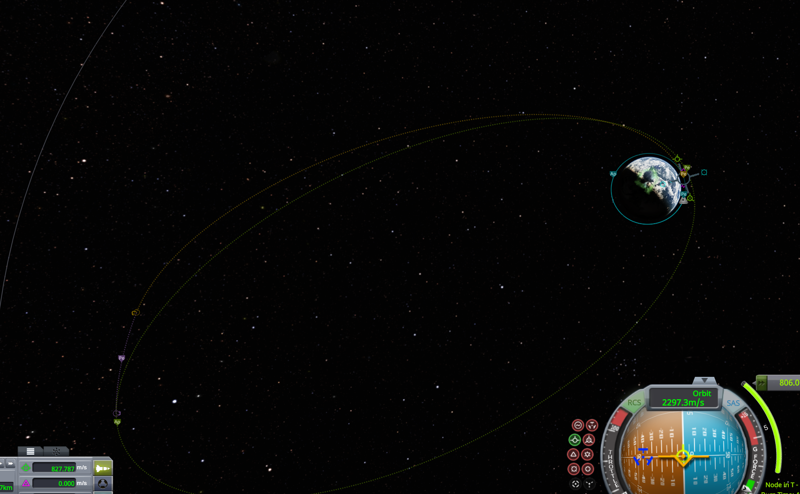
Munar orbit insertion
When you enter the Mun’s sphere of influence you’ll be on an escape trajectory — moving too fast to be captured. Burn retrograde at periapsis to slow below escape velocity and close your orbit (same rule as always: change your apoapsis at periapsis — capture is just dragging your Ap down from “outside the SOI” to “inside it”).
If your Mun periapsis is below the surface, fix it before you arrive: create a maneuver about halfway there and pull the radial handles until the Pe sits at a comfortable altitude (~50km).
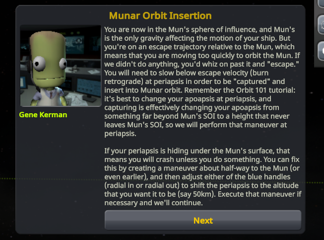
Landing
The descent plan:
- Descent orbit insertion burn (low throttle) — an orbit that almost touches the surface.
- Warp to the new periapsis.
- Braking burn: retrograde at ~1/3 throttle — don’t kill all your speed early or you’ll just fall and have to cancel the speed again. This is a reverse gravity turn.
- From 1.5km up, descend at a measured pace: 1 m/s of speed per 10m of altitude remaining.
- Touch down softly.
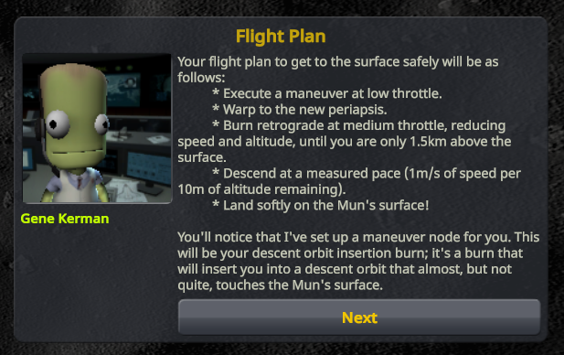
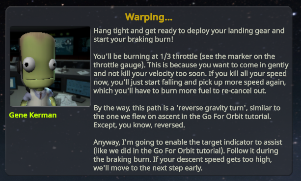
During the braking burn: [G] deploys landing gear, keep vertical speed above −100 m/s but never positive, and remember the altimeter reads altitude above sea level, not the terrain under you.
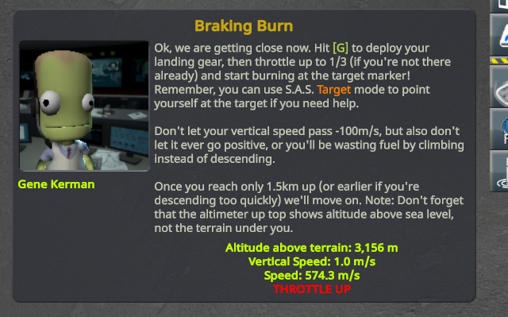
Getting Home
Ascent from the Mun
Much easier than a Kerbin launch — weak gravity, no atmosphere, single stage. Throttle up, immediately pitch over down the 90° (east) heading line, cut throttle once apoapsis passes 50km, circularize at apoapsis.
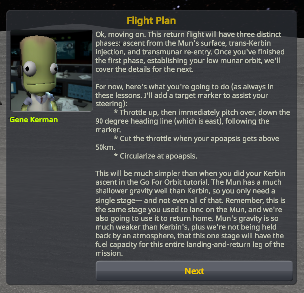
The ejection burn
Check the geometry in map view from above: you’re orbiting the Mun counter-clockwise, and the Mun orbits Kerbin prograde (same direction). To go home, eject opposite to the Mun’s direction of travel — which, counter-intuitively, means burning prograde in your munar orbit. Prograde locally, retrograde with respect to Kerbin: the burn cancels the Mun’s orbital velocity and drops your Kerbin periapsis.
Practical recipe: make a node anywhere on your Mun orbit, drag prograde until the path escapes the Mun’s SOI, then slide the node around the orbit and watch the Kerbin periapsis. It’s lowest when your ejection vector is parallel to the Mun’s track but opposite in direction. Target a Kerbin Pe between 5km and 32km (fine-tune with radial handles). Same principle gets you to other planets — plus “transfer windows.”
The long road home
Click the orbit (at least a Kerbin-radius before periapsis) → Warp Here. If you use manual time warp instead, back it off as you approach — Kerbin’s gravity speeds you up a lot near the end.
Reentry from the Mun
Transmunar reentry is hot — survivable without a heat shield only barely, from the Mun and no farther. With the shield’s extra mass the pod won’t aerobrake as well, so the craft carries a drogue chute on the side plus the main chute on top:
- Reenter shield-first, ride out the plasma.
- Stage the drogue as soon as its icon shows safe (no red/orange background) — drogues work at higher speeds and altitudes than regular chutes.
- Once the drogue has slowed you enough that the main chute shows safe, stage again.
Welcome home.